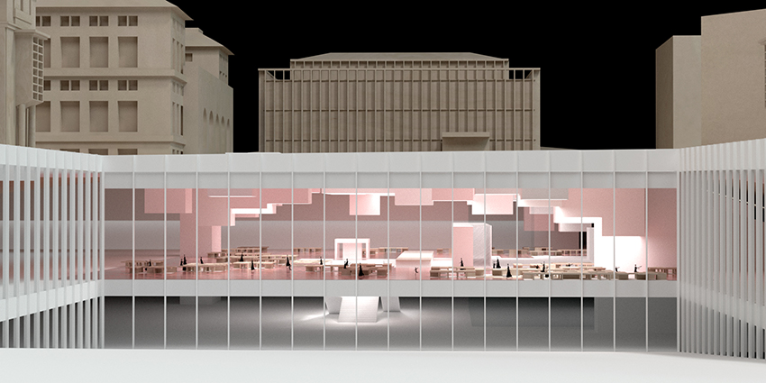
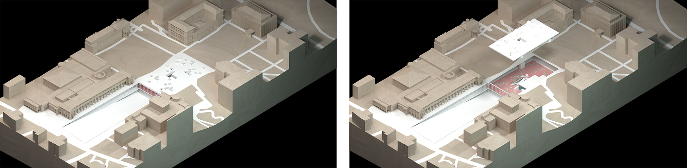
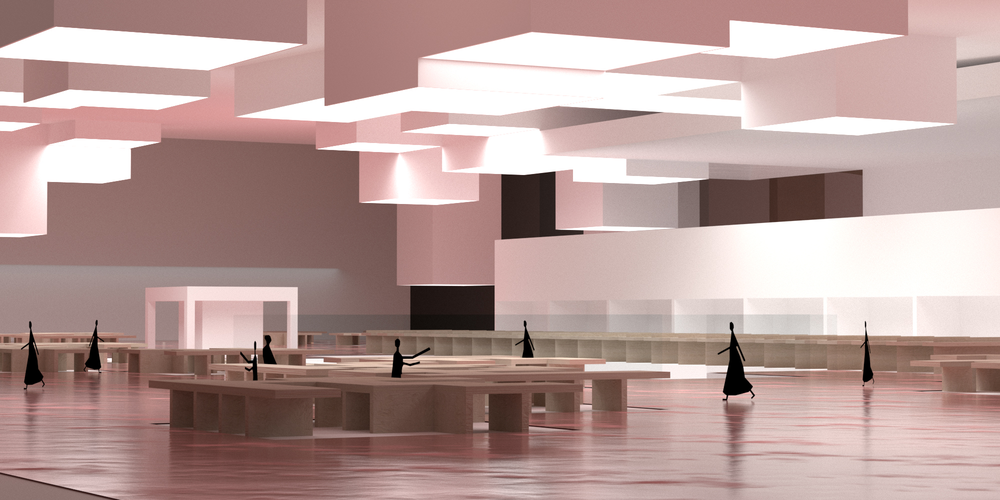
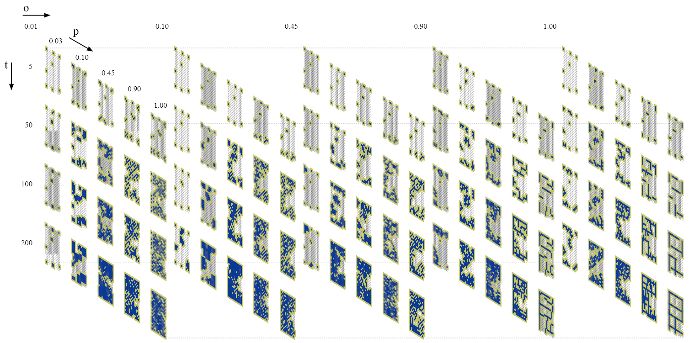
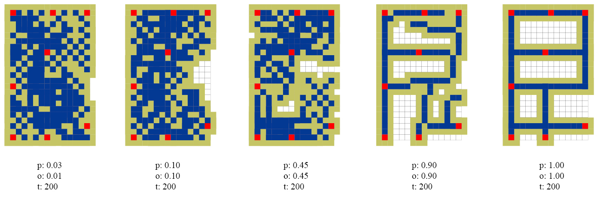
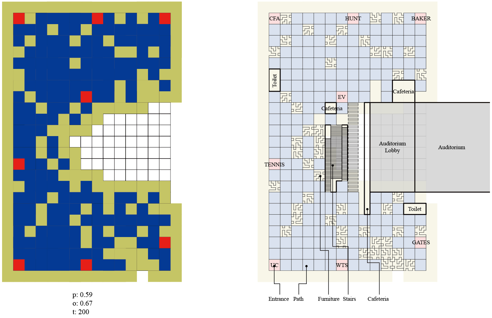

'Underground Plaza' project is the part of the 'Underground Campus of Carnegie Mellon University' project. The site is now filled with grass and landscaping, and is the center of the campus between buildings such as the Cohon University Centre, the CFA, the Hunt library, and the Drama School. The main concept of this space is 'floating'. It is not a space where many students or users stay long at a time, but constantly move, collide, and stay for a while. Therefore, the key to design is to properly distinguish user movements and facilities. The space consisting of a cafeteria, a cafeteria, an entrance of auditorium, and a study area should attract students without significantly conflicting with many students. Diffusion Limited Aggregation (DLA) algorithm was used to find proper path and design a plaza for student's daily life. Aggregated cell can be translated as path of user's circulation and non-aggregated cells can be translated as space for installing furnitures and ammenities. Changing the mall between Cohon University Center and School of Drama into a sloped entrance of underground campus, the undergound plaza is the main and central space of the whole campus. The function of this space is distribution of directions. This space can be called as lobby of the CMU campus.

CMU Underground Plaza, View from North Entrance

Masterplan of CMU Underground Campus
DLA used not only for the pattern of floor of underground plaza but also for the ceiling. Underground space can be defined by planning floor space and by planning light and space of ceiling. Planning ceiling is also related to the floor of the ground outside. Unlike the DLA for floor, DLA for ceiling needs more fragmented and less orthogonal conditions to creat a proper circulation on the ground. The cells not aggregated are used as skylight to define the plaza space.

CMU Underground Plaza, Perspective
Rule1 - Simple Aggregation
The blue cell means 'aggregated' status of a cell. In order to run DLA at least one aggregated cell is required at the initial step. The aggregated cell can have 8 Moore neighbors. These cells will be called as 'possible' status and represented yellow color. When one of theses neighboring cells got a conflict with agent cell, it will be aggregated and possible area will be merged and increased.
Rule2 - Branch & Cluster Shape
When new aggregation happens, their could be conflict condition to define branch or cluster shape. If a conflicted cell has one other aggregated cell within its Moore neighbors, it means this rule could organize branch shape. Otherwise, the cell has more than one aggregated cell within its Moore neighbors, it means this rule could organize cluster shape. This rule can be cotrolled by probability.
Rule3 - Orthogonal Shape
When new aggregation happens, their could be conflict condition to define orthogonal shape. If a conflicted cell does not have any other aggregated cell within its orthogonal neighbors (4 cells), it will organize non-orthogonal shape. Otherwise, it has more than one orthogonal neighbors, it will organize orthogonal shape.

Parameter 't' means number of iteration.
Parameter 'p' means how much the aggregation is cluster-shaped or branch-shaped. The higher p, the more brach-shaped.
Parameter 'o' means how much the aggregation is orthogonal. The higher o, the more orthogonal.

Different Patterns by Different Combinations of Probabilities

Translation of DLA Pattern to PLAN